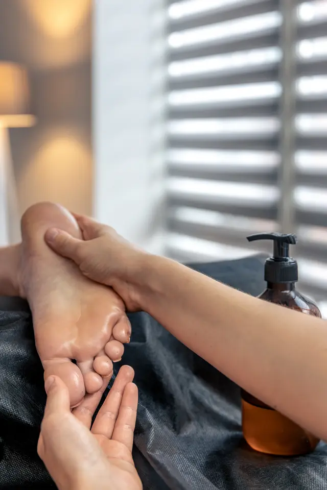

Por Qué el Masaje Relajante de Pies es Mucho Más que un Lujo en Pachuca
En una ciudad como Pachuca, donde mucha gente pasa de 8 a 10 horas al día de pie, caminando sobre superficies duras o con calzado que no siempre ayuda al pie, la tensión que se junta en pies y tobillos no es poca cosa, sino una causa real de cansancio general, dolores musculares, problemas para dormir y menos calidad de vida.
El masaje relajante de pies en Podóloga Aurora, en Pachuca, no es un lujo del que puedas prescindir, es una herramienta terapéutica accesible que con constancia cambia cómo se siente todo tu cuerpo, porque la planta del pie tiene más de 7,200 terminaciones nerviosas que, bien estimuladas con movimientos lentos y rítmicos, provocan una respuesta de relajación que llega hasta el sistema nervioso central y se siente de los pies a la cabeza.
Dato clínico: los estudios sobre masoterapia muestran que un masaje de pies de 30 minutos baja de forma importante el cortisol en sangre, la hormona del estrés, reduce la frecuencia cardiaca y la presión en personas con hipertensión leve y mejora el sueño de quienes lo reciben cada semana.

La Técnica que Aplicamos: Sueca Adaptada a la Anatomía Podológica
No todos los masajes de pies son iguales, y en Podóloga Aurora usamos una adaptación de la técnica sueca, la base científica del masaje terapéutico moderno, aplicada a la anatomía del pie y el tobillo con conocimiento podológico para trabajar con precisión sobre las estructuras correctas:
- Effleurage o deslizamiento: movimientos largos y envolventes con presión gradual que calientan los tejidos, activan la circulación superficial y preparan los músculos para la fase más profunda del masaje
- Petrissage o amasamiento: movimientos de compresión y liberación sobre los músculos intrínsecos del pie —flexores, extensores y abductores digitales— para liberar nódulos de tensión y mejorar la nutrición muscular
- Fricción profunda sobre arco plantar: aplicación de presión sostenida en la fascia plantar y el arco medio para liberar la tensión acumulada por el apoyo continuo durante la jornada
- Movilización pasiva de tobillo: rotaciones suaves y tracciones de los dedos para liberar las articulaciones metatarsofalángicas y el tobillo, recuperando el rango de movimiento articular
- Tapotement de cierre: percusiones suaves rítmicas que estimulan las terminaciones nerviosas superficiales y generan la respuesta de relajación final que caracteriza el cierre del masaje
Los Aceites que Usamos y Por Qué Marcan la Diferencia
El aceite que se usa en el masaje importa, porque cada uno tiene propiedades propias que refuerzan el efecto terapéutico del tratamiento:
- Aceite de lavanda: propiedades calmantes y ansiolíticas documentadas. Ideal para sesiones de relajación profunda y para personas con dificultad para desconectarse del estrés
- Aceite de menta piperita: efecto refrescante y analgésico suave. Excelente para pies con sensación de ardor, cansancio intenso o después de actividad física prolongada
- Aceite de eucalipto: propiedades antiinflamatorias y descongestionantes. Recomendado para pies con edema leve o pesadez por mala circulación
- Aceite base de almendras dulces: rico en ácidos grasos esenciales, hidrata y nutre la piel durante el masaje sin dejar residuo graso excesivo
- La selección del aceite se hace en cada sesión según el objetivo del paciente y el estado de sus pies ese día — cuéntanos qué necesitas al llegar
Beneficios del Masaje Relajante de Pies con Frecuencia Regular
Un masaje de vez en cuando da bienestar inmediato, pero con constancia logra cambios duraderos en tu salud:
- Reducción del edema vespertino en pies y tobillos por mejora del retorno venoso y linfático
- Disminución de la tensión en la fascia plantar, reduciendo el riesgo de desarrollar fascitis plantar
- Mejor calidad del sueño por activación del sistema nervioso parasimpático durante la sesión
- Alivio de cefaleas tensionales y rigidez cervical a través de la estimulación de zonas reflejas en el pie
- Piel de los pies más hidratada y suave por la acción nutritiva de los aceites base durante el masaje
- Sensación general de bienestar y reducción de la irritabilidad asociada al cansancio crónico
Atendemos en Pachuca, Hidalgo: recibimos a pacientes de toda la ciudad, de Mineral de la Reforma y de los municipios cercanos, de lunes a domingo de 8:00 a.m. a 6:00 p.m., con cita previa por WhatsApp para apartarte el horario que mejor te acomode.